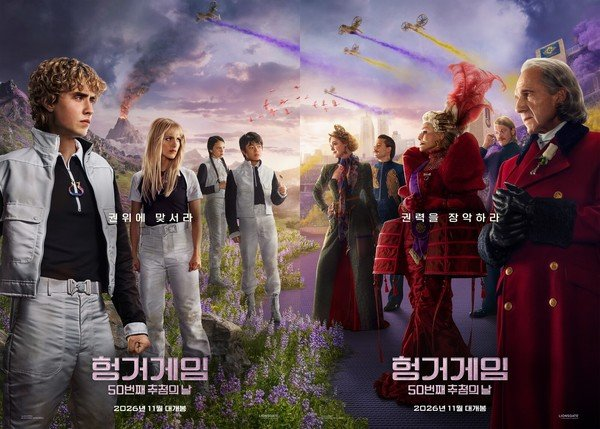
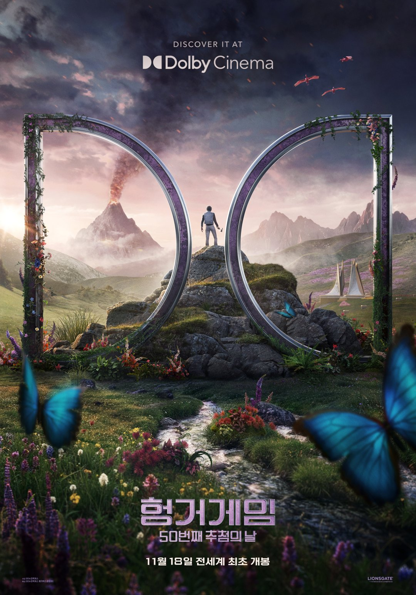
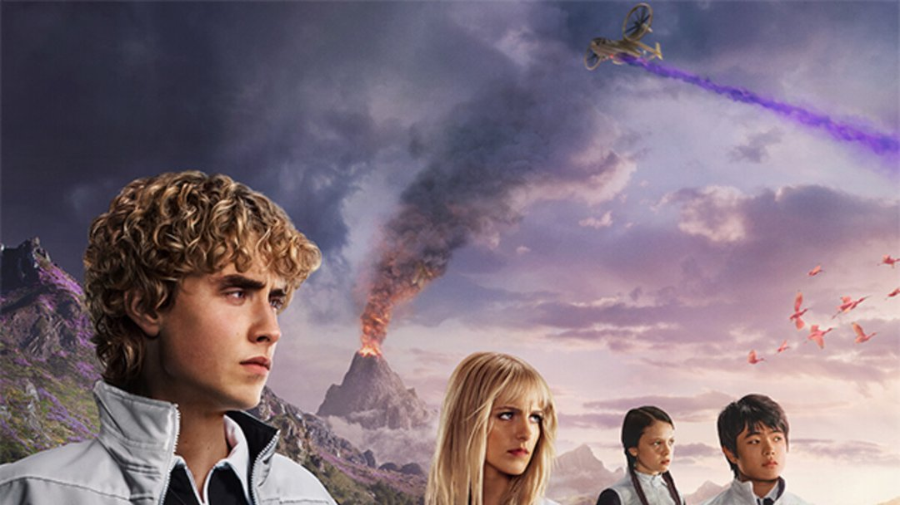
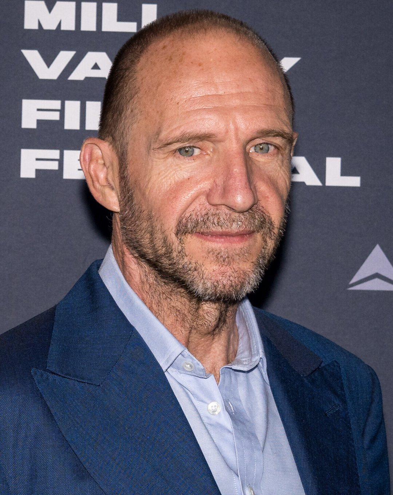
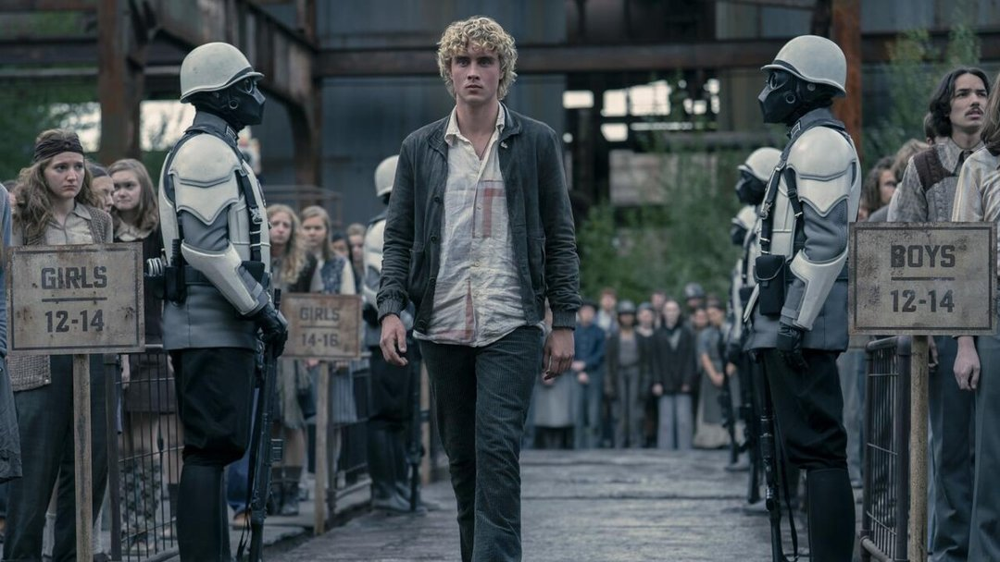
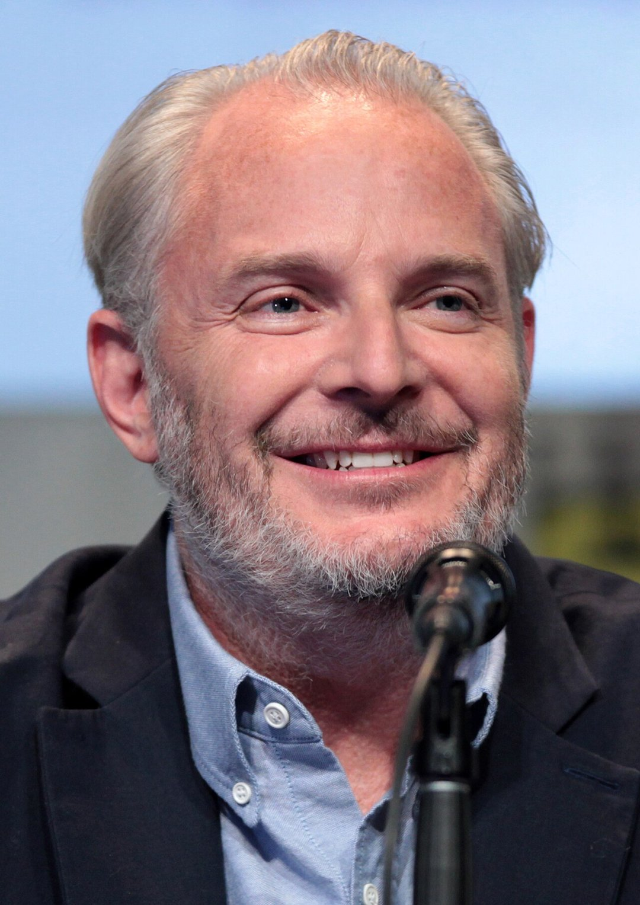

캣니스에게 살아남는 법을 가르친 헤이미치에게도 경기장에 끌려간 소년 시절이 있었어요. 그 이야기를 그린 '헝거게임 50번째 추첨의 날'이 11월 18일 한국에서 전 세계 최초로 개봉했어요. 보러 가기 전에 궁금한 쿠키 영상, 러닝타임, 시리즈 순서부터 볼게요.
📷 사진 1 자리
▲ '헝거게임 50번째 추첨의 날' 국내 포스터 · 사진=누리픽쳐스 제공
▶ 영상 1 자리
쿠키 영상은 없다
엔딩 크레디트가 끝난 뒤 나오는 쿠키 영상은 없어요. 해외 영화 매체 루퍼와 슬래시필름이 크레디트 중간에도, 끝난 뒤에도 추가 장면이 없다고 전했어요. 크레디트가 올라가면 자리에서 일어나도 돼요.
러닝타임 158분
상영 시간은 158분, 2시간 38분이에요. 극장 광고 시간까지 더하면 3시간 가까이 앉아 있게 되니 시간을 넉넉히 잡는 게 좋아요.
📷 사진 2 자리
▲ '헝거게임 50번째 추첨의 날' 돌비시네마 포스터 · 사진=누리픽쳐스 제공
시리즈 몇 번째, 순서는
이번 영화는 '헝거게임' 시리즈 여섯 번째 작품이에요. 이야기 시점은 캣니스가 나간 대회보다 24년 앞선 제50회 헝거게임이에요. 기존 시리즈에서 우디 해럴슨이 연기한 헤이미치의 젊은 시절을 다룬 프리퀄이죠.
📷 사진 3 자리
▲ '헝거게임 50번째 추첨의 날' 공식 이미지 · 사진=누리픽쳐스 제공
| 개봉 순서 | 제목 | 개봉 |
|---|---|---|
| 1 | 헝거게임: 판엠의 불꽃 | 2012 |
| 2 | 헝거게임: 캐칭 파이어 | 2013 |
| 3 | 헝거게임: 모킹제이 | 2014 |
| 4 | 헝거게임: 모킹제이 파트 2 | 2015 |
| 5 | 헝거게임: 노래하는 새와 뱀의 발라드 | 2023 |
| 6 | 헝거게임 50번째 추첨의 날 | 2026 |
이야기의 시간 순서로 보면 '노래하는 새와 뱀의 발라드'가 가장 먼저이고, 이번 영화가 그다음, 그 뒤가 캣니스가 주인공인 1~4편이에요.
누가 나오나
| 배우 | 배역 |
|---|---|
| 조셉 자다 | 헤이미치(젊은 시절) |
| 랄프 파인즈 | 판엠 대통령 스노우 |
| 키에란 컬킨 | 헝거게임 진행자 시저 플리커맨 |
| 제시 플레먼스 | 플루타르크 |
헤이미치 역의 조셉 자다는 2700명이 넘게 참여한 오디션을 거쳐 뽑혔어요. 이 밖에 맥케나 그레이스, 엘 패닝, 글렌 클로즈, 마야 호크 등이 나와요. 연출은 시리즈 대부분을 맡아 온 프랜시스 로렌스 감독이에요.
📷 사진 4 자리
▲ 랄프 파인즈(2024년) / 사진: Steve Disenhof / CC BY-SA 4.0 / 위키미디어 공용
어떤 이야기인가
독재국가 판엠은 해마다 구역마다 청소년을 추첨으로 뽑아 마지막 한 명이 남을 때까지 싸우게 하는 헝거게임을 열어요. 12구역 소년 헤이미치가 제50회 대회 참가자로 뽑혀 수도 캐피톨로 향하면서 이야기가 시작돼요.
📷 사진 5 자리
▲ 추첨 장면 스틸 · 사진=㈜누리픽쳐스 제공
기존 시리즈를 봤다면 헤이미치가 이 대회의 우승자라는 건 이미 알고 있어요. 그래서 영화는 누가 이기느냐보다 그가 어떻게 살아남는지에 무게를 둬요.
지금 성적
국내에서는 21일 박스오피스 3위에 올랐어요. 북미에서는 미국 매체 버라이어티가 첫 주말 수익을 1억~1억2500만 달러로 내다봤어요. 그대로라면 2015년 '모킹제이 파트 2' 이후 11년 만에 시리즈 북미 오프닝 1억 달러를 넘기게 돼요.
📷 사진 6 자리
▲ 프랜시스 로렌스 감독(2015년) / 사진: Gage Skidmore / CC BY-SA 3.0 / 위키미디어 공용
헤이미치가 우승한다는 결말을 알고 보는 영화라, 시리즈를 처음 보는 사람보다 캣니스 시리즈를 본 사람에게 더 반가운 이야기예요. 1편 '판엠의 불꽃'에서 헤이미치가 왜 그런 어른이 됐는지 궁금했던 분이라면, 이번 편을 보고 1편을 다시 보는 순서도 괜찮아요.
'헝거게임 50번째 추첨의 날'은 쿠키 영상 없이 158분이고, 11월 18일 개봉해 지금 극장에서 상영 중이에요.





